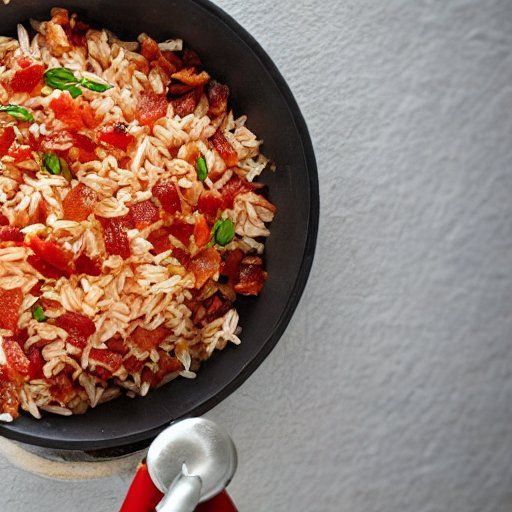

Riz espagnol
Ingrédients
- 8 tranches de bacon, coupés en dés

- 1 gros oignon espagnol, finement coupé
- 1 poivron vert, finement coupé en dés
- 2 branches de céleri, finement hachées
- 2 t de bouillon de poulet
- 1 t de riz à grain long, non cuit
- 2 t de tomates pelées, épépinées et hachées
- 2 c. à thé de chili en poudre
- 1/2 c. à thé de sel
- 1/4 c. à thé de poivre
- 1/4 c. à thé de paprika
Instructions
Faire cuire le bacon dans une grande casserole.
- 8 tranches de bacon, coupés en dés
Ajouter les légumes et les faire sauter jusqu'à ce qu'ils soient tendres.
- 1 gros oignon espagnol, finement coupé
- 1 poivron vert, finement coupé en dés
- 2 branches de céleri, finement hachées
Ajouter le bouillon, le riz, les tomates et les épices.
- 2 t de bouillon de poulet
- 1 t de riz à grain long, non cuit
- 2 t de tomates pelées, épépinées et hachées
- 2 c. à thé de chili en poudre
- 1/2 c. à thé de sel
- 1/4 c. à thé de poivre
- 1/4 c. à thé de paprika
Couvrir et amener à ébullition.
Réduire le feu et laisser mijoter à feu moyen-doux.
Cuire jusqu'à ce que le liquide soit absorbé.